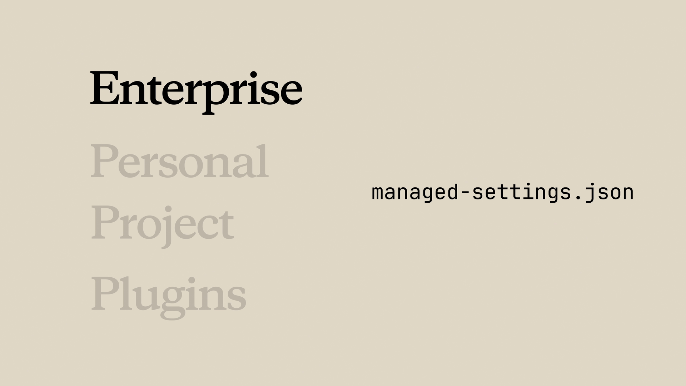

Если skill не работает
Чему научитесь
Около 15 минут
К концу урока вы сможете:
- прогнать валидатор до того, как искать причину в поведении модели;
- починить skill, который не срабатывает или не появляется в списке;
- разобрать конфликт одинаковых имён;
- найти типичные ошибки запуска: зависимости, права, пути.
Сначала категория, потом правка
Видео, около 4 минут
Поломки обычно попадают в несколько корзин: не срабатывает, не грузится, побеждает не тот, падает при выполнении. Ролик идёт по ним по порядку и показывает валидатор и claude --debug.
Коротко
- Сначала валидатор: он ловит сломанную структуру раньше, чем вы начнёте переписывать описание.
- Не срабатывает — почти всегда описание. Добавьте фразы, которыми вы реально просите.
- Не грузится —
SKILL.mdдолжен лежать в именованном каталоге, а файл называться ровноSKILL.md. - Включается не тот — описания слишком похожи. Разведите их.
- Падает при запуске — зависимости,
chmod +xна скриптах, прямые слэши в путях даже на Windows.
Валидатор
Первая команда — проверка структуры skill, а не новый промпт. В курсе её ставят через uv: так быстрее, чем собирать окружение вручную под свою систему. Запускайте из каталога skill или укажите путь. Валидатор смотрит форму файла: frontmatter, имя, расположение. Пока структура сломана, правка описания ничего не даст.
Не срабатывает
Файл на месте, валидатор молчит, а на вашу фразу skill не включается. Совпадение смысловое: если пересечения с описанием мало, выбора нет.
- Сравните
descriptionс тем, как вы на самом деле просите. - Допишите живые формулировки, не синонимы «для красоты».
- Проверьте вариации: «помоги профилировать», «почему так медленно», «ускорь это».
- Какая не сработала — те слова добавьте в описание.
Пока сессия старая, новое описание не видно. Перезапустите Claude Code.
Не появляется в списке
Спросите «какие skills доступны». Если вашего нет:
- файл лежит в каталоге с именем, а не как
skills/SKILL.mdбез папки; - имя файла ровно
SKILL.md:SKILLзаглавными,mdстрочными.skill.mdиSKILL.MDне то.
claude --debug печатает ошибки загрузки. Ищите своё имя каталога: часто сообщение сразу говорит про YAML или путь.
Включился не тот
Два описания про «review» будут путаться. Сделайте их различимыми по задаче и по словам пользователя: фронтенд-доступность и безопасность API не должны делить одни и те же триггеры. Конкретика помогает и выбрать нужный skill, и не задеть соседний.
Ваш skill молчит, потому что имя занято
Личный code-review не используется, если корпоративный skill называется так же. Enterprise побеждает всегда. Обычно проще переименовать свой каталог во что-то узкое. Второй путь — договориться с администратором, если корпоративная версия вам реально мешает, а не просто перекрывает личную привычку.

managed-settings.json. Личный, проектный и плагин остаются ниже.Плагин стоит, skills не видно
Очистите кэш, перезапустите Claude Code и поставьте плагин снова. Если после этого пусто, структура внутри плагина, скорее всего, неверная — снова валидатор, уже на каталоге плагина.
Упал во время работы
- Нет зависимости. Пакет, который вызывает скрипт, должен быть установлен. Напишите это в инструкции skill, чтобы Claude не гадал.
- Нет права на запуск. Для скриптов:
chmod +xна файл, на который ссылается skill. - Пути. Везде прямые слэши, включая Windows:
scripts/validate.sh, не обратный слэш.
Короткий чеклист
- Не срабатывает — описание и живые фразы, затем перезапуск.
- Не в списке — путь, имя файла, первая строка
---,claude --debug. - Не тот skill — разведите описания.
- Вас перекрыли — иерархия имён, переименуйте свой.
- Плагин пустой — кэш, перезапуск, переустановка, валидатор.
- Падает в работе — зависимости,
chmod +x, прямые слэши.
Вопросы к себе
- Какой из пунктов чеклиста сэкономил бы вам время, если бы вы смотрели его до переписывания промпта?
- Где в команде запускать валидатор до того, как skill попадёт в общий репозиторий?
Конец курса
Вы прошли, как skill устроен, как его создать, настроить, отличить от других механизмов, отдать команде и починить. Хороший skill начинается с фразы, которую вы уже устали повторять.
Оригинал урока: Troubleshooting skills